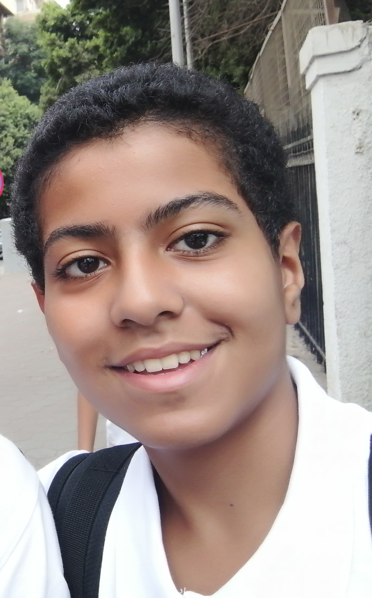
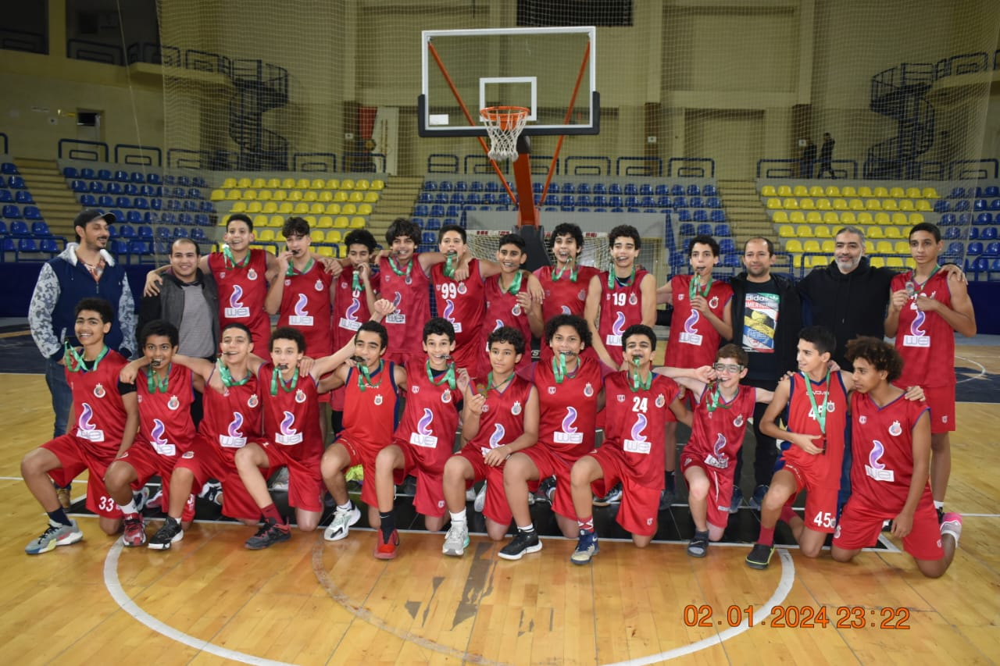

MUHAMMAD WAFAIE

Contents
About me
Hello, my name is Muhammad Wafaie. I am currently 14 years old, a student entering grade 9 in Dar El Tarbiah School, and an athlete. I am from Cairo, Egypt. I play 4 sports: Basketball, Football, Archery, and Boxing. Among all these four sports, Basketball is my favorite because I have been training since I was 8. I play as a shooting guard in Basketball. In Football, I play as a striker in the academy and I play for fun.
I started playing Archery last year because I think I can be talented in that sport and to win tournements. I also joined Boxing recently to learn to be tough and to have good stamina. There is a sport that I used to play, Squash,
I did not really like this sport but I played it because my dad and my grandfather used to played it and they wanted me to play it.
As an athlete
\
- Basketball: As I said before, is my favorite sport because it's so fun and I really one day hope to be a professional basketballer like my idol Stephen Curry. I trained basketball
in one club, Shooting Club. Last year, my team and I won third place in Giza Basketball zone.

-
Football: I joined the Football academy because I love Football very much and I wanted to learn how to play Football so that I can play with my friends, my family, and others.
The greatest footballer in my opinion is the GOAT Messi.
-
Archery: Archery, I think, is the sport that I might have a future about. When I had my first training, coaches said I have really good potential in the sport and I might be
one of the best players in the world. The coaches knew me from my older brothers because they were professionals and won many medals.
-
Boxing: I don't train real Ioxing like I don't fight people, I only train Boxing to be strong and to have great stamina and to be tough in life.